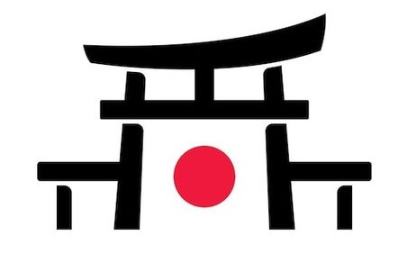

Tokio
Tokio, la capital de Japón, es una metrópolis dinámica y moderna que combina la tradición con la
innovación. Como una de las ciudades más grandes del mundo, Tokio es un centro global de cultura,
tecnología, finanzas y moda. Con una historia que se remonta siglos atrás, la ciudad ha
experimentado un rápido crecimiento y desarrollo, convirtiéndose en un crisol de contrastes donde
los rascacielos modernos se mezclan con santuarios antiguos y barrios tradicionales como Asakusa y
Shibuya.
Además de ser la sede del gobierno y la residencia imperial de Japón, Tokio es conocida por
su gastronomía de clase mundial que abarca desde sushi de alta calidad hasta deliciosos platos
callejeros como el takoyaki y el okonomiyaki. La ciudad también alberga una próspera escena
cultural, con museos de renombre internacional, teatros de vanguardia y una animada vida nocturna. A
pesar de su modernidad, Tokio se enfrenta a desafíos como la congestión urbana, la contaminación y
el envejecimiento de la población, pero sigue siendo un destino emocionante y fascinante para
visitantes de todo el mundo.